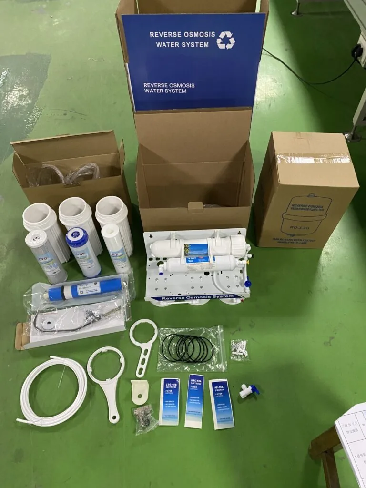

400GPD High-Flow Reverse Osmosis (RO) Membrane Element
400GPD High-Flow Reverse Osmosis (RO) Membrane Element — Type: Dry Membrane.
Send Inquiry
Under-Sink Reverse Osmosis Water Filter should be selected by membrane capacity, feed-water pressure, filter-stage layout, installation position and service access. For distributor or appliance-brand programs, confirm the faucet, tank or tankless layout, replacement filters and private-label packaging before quotation. Key specifications include Stages: Multi-stage; Membrane: RO 75GPD.
Buyers comparing Under-Sink Reverse Osmosis Water Filter should look beyond the model name and check membrane output, filter-stage sequence, inlet-pressure range, service access and installation format. For OEM RO water purifier programs, the quotation should also define panel language, faucet or tank options, replacement filters, logo placement and export carton requirements.
For Under-Sink Reverse Osmosis Water Filter, this product page should help buyers understand application fit, compatibility and order requirements. The most useful content is model-specific information rather than broad factory or wholesale claims.
| Stages | Multi-stage |
|---|---|
| Type | No Pump Required |
| Membrane | RO 75GPD |
400GPD High-Flow Reverse Osmosis (RO) Membrane Element — Type: Dry Membrane.
Send InquirySend quantity, target market, configuration notes and packaging requirements for Under-Sink Reverse Osmosis Water Filter. Yuchen Water will confirm matching options, accessories and export details before pricing.